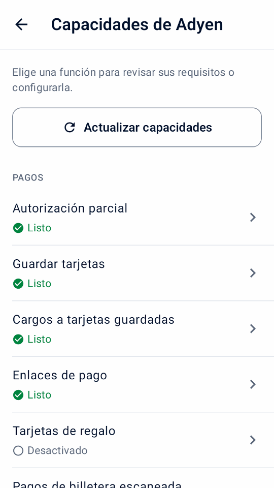
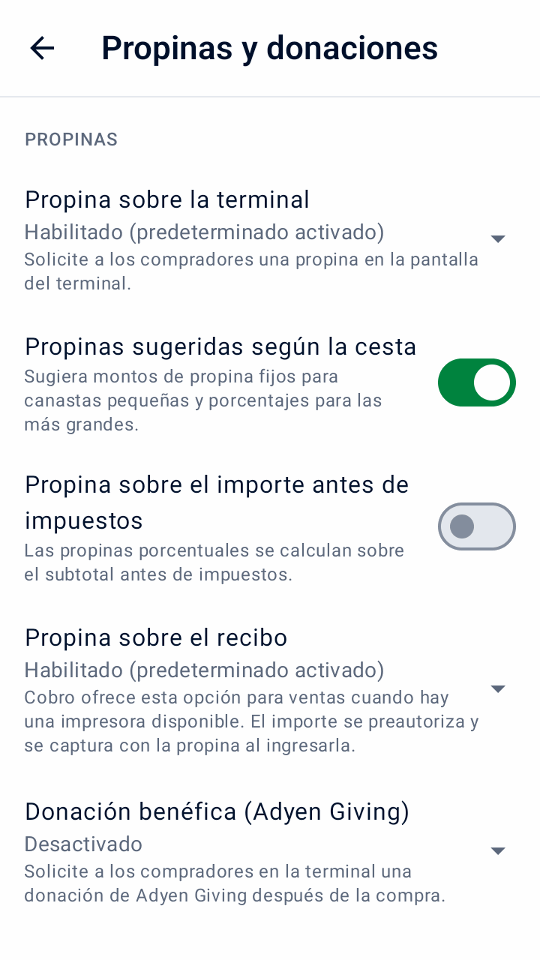
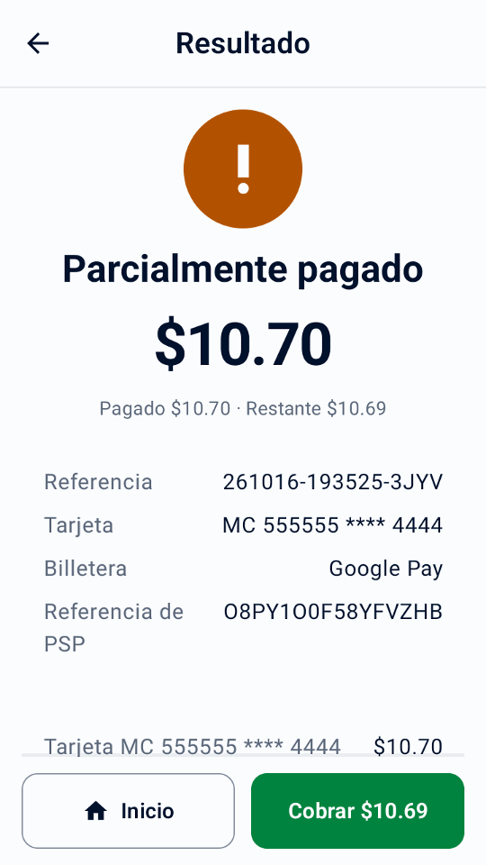
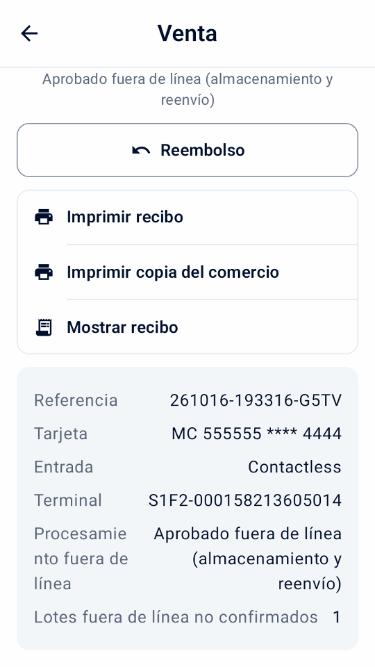
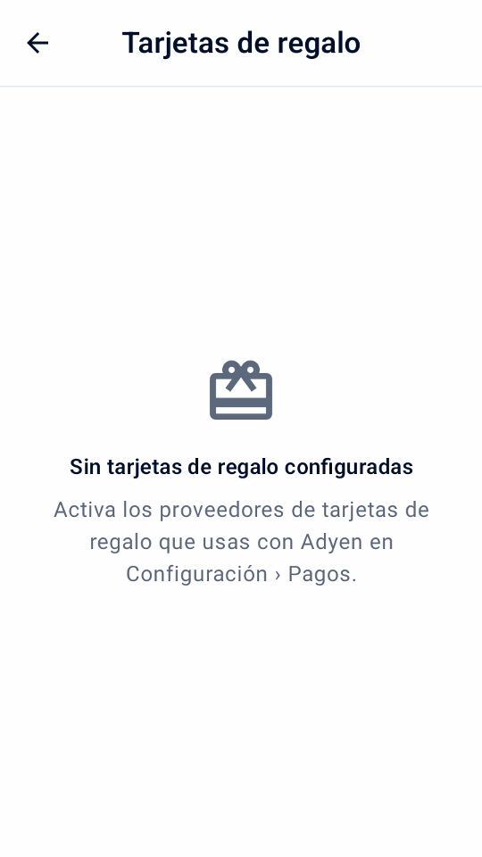

Guía
Opciones de pago
Agrega los flujos de pago que necesita tu negocio. Revisa la disponibilidad, completa la configuración en Adyen y prueba cada flujo antes de usarlo en LIVE.
Verifique y configure las capacidades de Adyen
Abre Configuración › Capacidades de Adyen después de conectar tu destino de pago. Este centro reúne funciones de pago y terminal de Adyen, no herramientas locales ni ajustes del PIN de gerente. Los grupos son Pagos, Propinas e interacción, Recibos y escaneo y Terminal y recuperación.
Cada función muestra Listo, Configurado en Adyen, Desactivado, Falta configurar o Sin verificar debajo del nombre. Las funciones No compatible quedan ocultas en la lista al final hasta que la abras. Estos indicadores no garantizan la aprobación de una cuenta, tarjeta o método de pago. Si faltan ajustes de pago, primero se ofrece completar la configuración.
Desactivado · configurado en Adyen significa que Adyen ya tiene la función configurada para el terminal o la tienda, como opciones de propina, MOTO o un tipo de tarjeta de regalo; active su ajuste local en Mini mPOS para usarla.
- Toca Actualizar capacidades para leer los ajustes del terminal seleccionado. La consulta real necesita los roles de Management API de Inicio rápido.
- Elige una función para ver sus requisitos y ajustes.
- En terminales compatibles, edita las propinas, DCC, MOTO o los límites sin conexión dentro de su función. Introduce los importes en moneda normal y elige Usar límite heredado para quitar un límite personalizado. Cada sugerencia de propina tiene una fila validada.
- Toca Guardar en Adyen.
Un guardado de resultado desconocido no se reintenta automáticamente. Actualiza correctamente y revisa los valores de Adyen antes de decidir. Guardar y consultar confirma los ajustes en Adyen, no su aplicación en el terminal. Puede faltar descargar la configuración y reiniciar; consulta las actualizaciones de configuración del terminal de Adyen.
Tap to Pay no ofrece funciones de terminal físico como la propina en el terminal, la pantalla del cliente, MOTO/MKE, los pagos sin conexión ni la conciliación del terminal. Para la habilitación de la cuenta y los requisitos de métodos de pago, siga la documentación de pagos presenciales de Adyen.


Elige cómo recibir propinas
Las propinas en la terminal se eligen antes de cobrar a la tarjeta. Las propinas en el recibo retienen el importe hasta que el personal ingresa la propina escrita y realiza la captura. Revisa abajo los requisitos de cada método.
Recoger una propina en la terminal.
- Compruebe las propinas en el terminal en Capacidades de Adyen. Configure las opciones de propina predefinidas y personalizadas del terminal para la moneda de pago cuando sea necesario.
- en Configuración › Propinas y donaciones, habilitar Propina sobre la terminal y elija su valor predeterminado de pago. Opcionalmente habilitar Propinas sugeridas según la cesta para cantidades fijas en cestas pequeñas y porcentajes en las más grandes, o Propina sobre el importe antes de impuestos. Ambas opciones requieren software de terminal 1.101 o posterior, verificado con una prueba de conexión.
- En Cobro de una venta, seleccione Propina sobre la terminal y toque pagar. El comprador elige una propina antes de que se cargue la tarjeta. Verifique el total devuelto y la propina y entregue el recibo.
Esto no necesita una impresora ni una entrada de propinas posterior. Propinas en el terminal y propinas sobre el recibo no se pueden seleccionar juntas. Tampoco se ofrece para autorizaciones previas, pagos con billetera escaneada o enlaces de pago; Las propinas en el terminal no se ofrecen con Tap to Pay.


Recoge una propina escrita en el recibo.
Requisitos previos
- Un terminal con una impresora.
- Autorización previa y sobrecaptura habilitadas por el soporte de Adyen; ver el Guía de propinas en recibos de Adyen
en Configuración › Propinas y donaciones, elija Habilitado (desactivado por defecto) o Habilitado (predeterminado activado) para configurar cómo se inicia el interruptor de pago. Desactivado, por defecto, lo oculta. Algunas tarjetas de débito y billeteras no admiten este flujo.
- En Cobro de una venta, active Propina sobre el recibo y toque pagar. La factura se retiene, no se cobra.
- Imprime el recibo. Tiene líneas de propina y total en blanco, y la copia del comerciante tiene una línea de firma.
- Cuando el cliente lo haya completado, toque Introducir propina en el resultado o use el filtro Esperando propina en Historial.
- Ingresa la propina o el total, o toca Sin propinay confirmar.
La aplicación captura la factura más la propina. Las propinas superiores al 20% primero necesitan que el emisor de la tarjeta aumente la retención; si se niega, ingrese una propina menor o ninguna. Una propina guardada no se puede cambiar. Antes de ingresar una propina, cancele el pago en lugar de reembolsarlo; posteriormente, los reembolsos incluyen la propina.
Advertencia
Ingrese pronto todas las propinas, incluido cero, para capturar los importes antes de que expiren las retenciones. Para capturas fallidas o desconocidas, consulte problemas de captura.
Retener y cobrar un depósito
Requisitos previos
- Autorización previa habilitada por Soporte de Adyen para sus métodos de pago; ver el Guía de preautorización de Adyen
Una preautorización retiene un importe en la tarjeta sin cobrarlo. Toda su cuenta no necesita captura manual; Mini mPOS lo solicita únicamente para estos pagos.
- En Inicio, toque Nueva preautorización. Elija un producto con autorización previa, escanee su código de barras o ingrese un monto. Cada preautorización tiene un ítem.
- Al finalizar la compra, toque Preautorizar. El recibo muestra el importe retenido.
- Cuando estés listo, abre la entrada en Historial y elige una acción:
- Capturar
- Cobra el importe adeudado. Una importe menor libera el resto; un importe mayor primero solicita al emisor de la tarjeta que aumente la retención. Los reembolsos son posibles una vez que se solicita la captura.
- Ajustar importe
- Cambia el importe retenido sin cobrarla. Al presentar el mismo importe se renueva la autorización.
- Cancelar preautorización
- Libera la retención. Si el pago ya fue capturado en el Área de Clientes, Adyen lo reembolsa en su totalidad.
Captura solicitada no es una confirmación final; revisa el Área de Clientes. Para obtener respuestas inmediatas a los ajustes, habilite Devolver datos de autorización de ajuste como se describe en el Guía de ajuste de autorización de Adyen.
Advertencia
Las retenciones caducan. Verifique el filtro de preautorización diariamente y capture o cancele con prontitud. Para operaciones fallidas o desconocidas, consulte problemas de captura.
Utilice flujos de trabajo de pago opcionales
Active en Configuración solo las opciones de pago que necesite. Salvo la autorización parcial, la división y los recargos, estos flujos requieren un terminal físico compatible, no Tap to Pay. Revise las capacidades de Adyen y pruebe su configuración real primero. La mayoría de las opciones no se pueden combinar en un pago; el cobro explica el conflicto y le pide desactivar una.
Aceptar pagos con guía por audio
Primero active Activar guía por audio en Configuración › Pagos › Accesibilidad, cuando el soporte de Adyen la haya habilitado para sus terminales, estos usen software compatible y su idioma no sea estonio, letón, islandés ni lituano. Está disponible en AMS1, S1F2, S1F2L, S1E2L y S1U2 con software 1.117 o posterior, y en M450, P630 y SFO1 con 1.124 o posterior. Consulte los requisitos de pagos accesibles de Adyen.
Al cobrar, active Guía por audio para el comprador que la necesite y desactive las propinas, Giving y el ingreso manual. Use una tarjeta que no requiera firma. El pago solicita el importe completo y omite los avisos de la pantalla del cliente.
El terminal lee las instrucciones en voz alta; dé tiempo al comprador. Mini mPOS espera hasta diez minutos el resultado. Si no llega respuesta, consulte el resultado desconocido antes de otro pago. La elección se restablece después de cada intento.
Recargos
Adyen agrega los recargos que usted configura en Adyen; Mini mPOS no los fija. Cuando Adyen informa uno, el historial, los recibos y el informe diario lo muestran separado de las compras y propinas; el total cobrado ya lo incluye. Un recargo no informado sigue siendo desconocido. Si una autorización parcial no informa el recargo, revise el Customer Area o reembolse la tarjeta original antes de empezar de nuevo.
Informe el recargo antes del pago, sobre todo con Tap to Pay, que no tiene pantalla de confirmación de recargo. No combine recargos con DCC. Mini mPOS bloquea ajustes y capturas por encima de la retención original cuando se informó un recargo. Consulte los requisitos de recargo de Adyen y la configuración de recargos de Adyen.
Tarjetas a meses en México
Confirme con Adyen sus programas de emisores y comisiones, active los meses en Configuración › Pagos y actualice las capacidades de Adyen para verificar la tienda mexicana. Al cobrar, elija débito, crédito en una sola exhibición o 3, 6, 9, 12 o 18 meses, y pague toda la venta con una tarjeta elegible. Los enlaces de pago, los tokens, las billeteras escaneadas y las tarjetas de regalo no llevan el plan.
Los detalles, el historial y los recibos muestran el plan solicitado y el devuelto. Un emisor no compatible puede rechazar el pago. Reembolse el pago original por importe o en su totalidad; el emisor gestiona el calendario.
Adyen: Tarjetas a meses en México
Cobrar un pago parcialmente autorizado
Active Permitir autorizaciones parciales para aceptar una aprobación de tarjeta por menos del importe solicitado. Cuando el resultado muestre Parcialmente pagado, revise los importes pagado y pendiente y toque Cobrar junto a Inicio. Elija cómo cobrar el saldo en la misma venta. No inicie una venta nueva por el total: la parte aprobada ya está pagada.
Una respuesta faltante no es una aprobación parcial. Resuelva los resultados desconocidos antes de cobrar más.


Dividir una venta o cobrar en efectivo
Al cobrar, toque Otras opciones de pago. Elija Efectivo para cobrar todo el saldo o Dividir pago para elegir un importe, partes iguales o artículos, y luego Pagar o Efectivo. Los precios e impuestos se conservan y los centavos sobrantes van a las primeras partes. El efectivo recibido empieza en el importe pendiente; al escribir, se reemplaza. Efectivo exacto lo restablece. Revise lo recibido y el cambio, entregue el cambio y confirme. El efectivo se registra solo en este dispositivo.
La venta sigue Parcialmente pagada hasta pagarse por completo. Toque Cobrar en el resultado o Cobrar saldo en Historial para continuar, incluso después de reiniciar. La siguiente parte igual se selecciona automáticamente. Resuelva cualquier resultado de tarjeta desconocido antes de cobrar más. El recibo enumera todos los pagos; el informe diario muestra el efectivo por separado y los totales del terminal nunca lo incluyen.
Con tarjetas de regalo configuradas, toque Tarjeta de regalo para pagar el importe elegido con una; un saldo insuficiente se aprueba en parte. Los pagos con tarjeta de regalo se reembolsan a la tarjeta, salvo las tarjetas de regalo locales, que se reembolsan fuera de Mini mPOS.


Demostraciones del simulador en español de una venta dividida.
Retiro con compra
Después de que Adyen confirme su tienda y programa de tarjetas, active Retiro con compra en Configuración › Pagos, fije un límite de efectivo y establezca un PIN de gerente. Al cobrar, ingrese el efectivo adicional solicitado y pague toda la venta con una tarjeta elegible. Una compra puede aprobarse aunque se rechace su retiro; entregue solo el efectivo aprobado.
Retiro de efectivo
Retiro de efectivo, en Inicio, solicita efectivo sin compra. Actívelo por separado cuando Adyen confirme el retiro de efectivo eftpos australiano para la tienda.
Tras la aprobación, revise el efectivo aprobado y el cargo a la tarjeta. Entregue solo el efectivo aprobado, toque Registrar efectivo entregado y apruebe con el PIN de gerente. Nunca entregue efectivo cuyo importe no se informó, y consulte un resultado desconocido en lugar de volver a solicitar efectivo. El historial conserva las entregas sin registrar; los informes diarios muestran el efectivo aprobado y entregado separado de las ventas. Los reembolsos nunca devuelven el efectivo entregado.
Aceptar vales de comida
Active Vales de comida en Configuración › Pagos solo después de firmar los contratos con los emisores, registrar su tienda y que Adyen habilite los vales. El país verificado de la tienda del terminal decide qué vales aplican: vales PAT de Brasil; vales Mastercard o Visa en Bélgica, Finlandia, Alemania, Luxemburgo y España; o Titres-restaurant en Francia. Actualice las capacidades de Adyen tras configurar. No se ofrecen Monizze, Pluxee Bélgica ni Lunch Check.
Donde los vales requieren productos elegibles, abra cada producto en Configuración › Productos y active Elegible para vales de comida; los artículos personalizados nunca son elegibles. Al cobrar, toque Otras opciones de pago › Dividir pago y luego Vale de comida. Mini mPOS ofrece lo máximo que puede pagar el vale; cobre el resto con tarjeta o efectivo. Los vales Mastercard o Visa pueden aprobarse en parte. Los Titres-restaurant aceptan como máximo EUR 25 al día, nunca en domingo ni días festivos, y no se pueden reembolsar: ofrezca crédito en tienda. Un vale brasileño con saldo insuficiente se rechaza; ingrese un importe menor.
En Brasil, active Elegir vales brasileños en la app para solicitar un pago con vale desde Mini mPOS. La selección desde la app requiere software de terminal 1.129 o posterior, verificado con una prueba de conexión. Déjelo desactivado si el soporte de Adyen habilitó la pantalla propia de crédito, débito o vale del terminal; entonces cobre con tarjeta y el comprador elige en el terminal. Las devoluciones de vales vuelven al vale original, nunca en efectivo.
Adyen: vales de comida en Brasil · Adyen: vales de comida en Europa
Utilice la pantalla del terminal orientada al comprador
Con un terminal de red/nube independiente, abra Configuración › Pantalla del terminal para el cliente. Elija si desea mostrar los detalles del artículo antes del pago, pedirle al comprador que confirme el pedido o recibir un correo electrónico cuando no haya ninguno en el proceso de pago. Solicitar un correo electrónico necesita recibos por correo electrónico por configurar; el recibo se envía automáticamente por correo electrónico cuando Enviar el recibo por correo electrónico automáticamente está encendido. Después de la aprobación, puede mostrar un código QR y solicitar una calificación de 0 a 10; una calificación devuelta aparece en los detalles de la transacción.
Estos avisos usan el idioma de la aplicación. No se ofrecen cuando Mini mPOS se ejecuta en el propio terminal de pago. El código QR contiene la referencia del comercio, no un recibo; de todos modos entregue el recibo.
Invitar a una donación benéfica
Después de organizar Adyen Giving con Adyen, habilite Donación benéfica (Adyen Giving) en Configuración › Propinas y donaciones. Al finalizar la compra, selecciónelo para invitar a una donación en el terminal después del pago. No se ofrece para preautorizaciones ni retenciones de recibos.
La compra y la donación son independientes. El monto de la donación reportado aparece en los detalles de la transacción; una compra aprobada por sí sola no confirma una donación.
Realice un pago MOTO o entrada de clave manual
- Consulta con Adyen que tu terminal y cuenta permiten el modo de ingreso requerido. Configurar MOTO en Capacidades de Adyen cuando sea necesario y establezca los PIN del personal en PIN del personal.
- en Configuración › Pagos, habilite la opción MOTO o Entrada de clave manual. Al finalizar la compra, seleccione Pedido por correo/teléfono (MOTO) para un pedido remoto, o Ingreso manual de tarjeta (MKE) cuando falla el chip o la lectura sin contacto. Sólo se puede seleccionar uno.
- Toque Pagar, revise la advertencia de responsabilidad por fraude y contracargos y complete la aprobación del gerente cuando se solicite.
Las transacciones con ingreso manual conllevan mayor responsabilidad por fraude y contracargos para el comercio.
Reconocer pagos fuera de línea y lotes pendientes
EMV sin conexión y Store-and-Forward necesitan un terminal compatible con acceso local: Mini mPOS en ese terminal o un terminal en su red. No se ofrecen a través de enrutamiento en la nube o Tap to Pay. Organice el procesamiento fuera de línea con Adyen y revise sus riesgos antes de establecer límites en Capacidades de Adyen; Mini mPOS no pone en cola los pagos ni hace que se pueda acceder a una terminal cuando su red local no funciona.
Las marcas históricas informaron ventas fuera de línea. Abrir una venta para ver Procesamiento fuera de línea, ya sea que utilizó EMV fuera de línea o Store-and-Forward, y cualquier Lotes fuera de línea no confirmados informado por la terminal. Una aprobación fuera de línea puede no tener todavía ninguna referencia PSP. No es un resultado desconocido, pero no confirma que Adyen haya recibido o liquidado el pago.
Restaure la conexión del terminal con Adyen y verifique los pagos cargados y los resultados finales en el Área de Clientes. Verifique las advertencias de lotes no confirmados y sin conexión durante conciliación terminal; los totales coincidentes no confirman la liquidación fuera de línea. Si no llegó una respuesta de pago concluyente, siga recuperación de resultado desconocido en lugar de asumir la aprobación fuera de línea o cobrar nuevamente.


Escanee el código de la billetera de un comprador
Use Escanear billetera en la caja de venta para leer un código de pago desde la aplicación de billetera del comprador. Esto es diferente a escanear el código de barras de un producto o un recibo de reembolso. Funciona con una terminal de pago física, no con Tap to Pay; el descubrimiento de billetera necesita una función de lectura.
- Verifique los campos de total y pago, luego toque Escanear billetera. Si se selecciona la propina en recibo, confirme el pago sin ella: la billetera carga el total inmediatamente, no una autorización previa.
- Elija la billetera del comprador. Se selecciona automáticamente una única billetera disponible. Sólo aparecen carteras configuradas individualmente; Alipay+ no implica opciones separadas de GCash, DANA, Kakao Pay o TrueMoney.
- En un terminal equipado con un escáner confirmado, presione su botón de escaneo. Este puede ser el terminal de red/nube, no el dispositivo que ejecuta Mini mPOS. Para escanear con la cámara del dispositivo, toque Usar cámara.
- Escanee el código de pago QR o el código de barras de pago del comprador. Un escaneo válido inicia el pago inmediatamente. Espere el resultado normal del pago y entregue su recibo.
Cancelar conserva el carrito. Un escaneo del terminal termina a los 30 segundos; use Escanear de nuevo o la cámara. Es posible que las billeteras no admitan Guardar tarjeta; un pago aprobado sin token guardado sigue aprobado. Resuelva problemas de billeteras y nunca reemplace un pago desconocido escaneando de nuevo.
Confirme la configuración de su billetera y pruebe el comportamiento con el Guía de billetera Adyen y Guía de Adyen PayPal y Venmo.


Demostraciones del simulador en español de escaneo de billeteras.
Utilice referencias y guarde tarjetas.
- Referencia del comerciante
- Para registrar una reserva o un número de pedido, active Configuración › Pagos › Solicite una referencia de comerciante. El número identifica el pago en Adyen. Si se deja en blanco, se genera una referencia única.
- Referencia del comprador
- en Configuración › Pagos, elija el Referencia del comprador: una referencia del cliente escrita al finalizar la compra (el valor predeterminado), el correo electrónico del cliente o ninguno. Se envía a Adyen con cada pago. Las referencias de correo electrónico tienen hash de forma predeterminada; Utilice la misma salt en todos los dispositivos.
- Tarjetas guardadas
- Con un conjunto de referencias de comprador, active Ofrecer guardar tarjetas. Obtenga el consentimiento del cliente antes de seleccionar Guardar tarjeta para futuros pagos. Para cargar uno más tarde, consulte Administrar tokens.
Administrar tokens
- En Inicio, toque Tokens e ingrese al Administrador PIN si se le solicita.
- Ingrese la referencia del cliente, o el correo electrónico cuando sea la referencia del comprador, y toque Buscar tokens.
- Toque Cobrar junto a un token y agregue productos o un Artículo personalizado. Este carrito es independiente de Nueva venta.
- Revise el cargo y toque Cobrar.
El cliente no está presente, así que obtenga antes su consentimiento. Los tokens guardados con otro Modelo de procesamiento recurrente no se pueden cobrar aquí. Reembolse estos pagos desde Historial. Si el resultado de un cobro es desconocido, consúltelo desde el historial durante siete días y, después, en el Customer Area. En el cobro de una nueva venta, Cobrar token aparece cuando la referencia del comprador tiene tokens guardados.
Para eliminar un token, toque su acción Eliminar, revise los detalles, confirme y apruebe con el PIN de gerente. La eliminación quita el token en Adyen para Mini mPOS y para cualquier otra integración; no se puede deshacer. Los pagos anteriores y sus reembolsos siguen disponibles. Si la eliminación no se confirma, toque Comprobar eliminación antes de cobrar o eliminar de nuevo.
Vender y administrar tarjetas de regalo
Las tarjetas de regalo funcionan con una terminal Adyen; Tap to Pay no las acepta. En Configuración › Pagos › Tarjetas de regalo, activa cada proveedor con el que completaste la incorporación en Adyen, agrega el tipo de tarjeta que Adyen te indicó para Intersolve o tarjetas locales y elige cómo presenta el personal las tarjetas: escanear con la cámara e ingresar el vencimiento, o deslizar o teclear en la terminal. Solo se ofrecen las acciones que Adyen documenta para cada proveedor: la desactivación es solo para Givex y las tarjetas locales solo aceptan pagos.
- En Inicio, toca Tarjetas de regalo y elige el proveedor y cómo se presenta la tarjeta.
- Elige Consultar saldo, Activar, Recargar, Retirar efectivo, Reembolsar a tarjeta o Desactivar.
- Para agregar valor, elige Pago con tarjeta, o Recibido fuera de la app y confirma que recibiste el dinero.
- Confirma y aprueba con el PIN de gerente.


La aprobación de consultas de saldo y cambios de valor sigue los permisos del personal. Primero se cobra el pago con tarjeta y el valor se envía solo cuando se aprueba; si el resultado del pago se desconoce, consúltalo antes de continuar. Si se cobró el pago pero no se agregó valor, la actividad muestra Valor no agregado: envía el valor de nuevo, reembolsa el pago con tarjeta o registra el dinero devuelto. Nada se repite automáticamente.
Deshacer recarga aparece para la última recarga de la tarjeta dentro de 24 horas. Un retiro de efectivo normalmente paga todo el saldo y cierra la tarjeta; solo algunas tarjetas Givex permiten menos. Entrega el efectivo cuando se apruebe y toca Efectivo entregado; una entrega sin confirmar queda en Requiere atención, también tras reiniciar. La actividad de tarjetas de regalo aparece en Historial y por separado en el reporte diario; nunca cuenta como venta.
Recibir pago con un enlace
Requisitos previos
- Su cuenta mercantil cumple con los Requisitos de Adyen Pay by Link, incluidos los términos y condiciones, antes del Use en vivo
- En la caja de una oferta, toque Crear enlace de pago.
- Muestra el código QR o toca Enviar enlace por correo, Imprimir enlace o, en una tableta o teléfono, Compartir enlace.
- Mantenga abierta la pantalla de enlace para ver cómo llega el pago, o luego toque Verificar pago en su entrada de Historial.
- Si el enlace ya no es necesario, toque Cancelar enlace.
La entrada muestra En espera de pago hasta que el enlace sea pagado, caduque o sea cancelado. Establecer la duración de los enlaces Configuración › Pagos › Enlaces de pago. Los enlaces son solo para ventas, no para depósitos ni propinas en el recibo.
importante
Cualquiera que tenga un enlace real puede pagar hasta que caduque. Reembolsar enlaces pagados en Área de Clientes › Pagos › Lista de pagos; la aplicación no puede reembolsarlos.
Si falta un enlace o no se actualiza, consulte problemas con el enlace de pago.